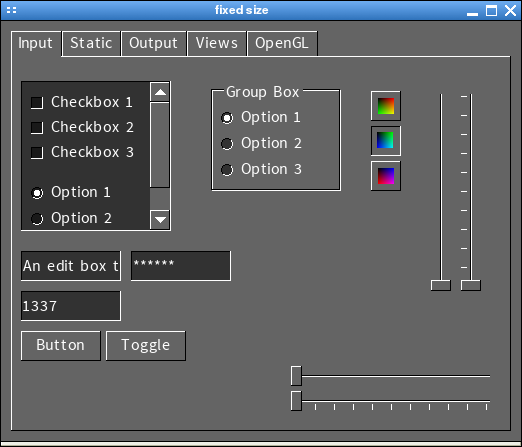

SGUI
Using the SGUI library
Creating and using widgets

So far, we have seen how to create and manipulate windows. This is not very
usefull as it presents no ways for a user to interact with the program yet.
For this purpose, SGUI provides widgets. In the image above you can
see various widgets inside a window. Again, we will expand the previous
example to demonstrate this.
We start off by adding some new declarations at the beginning of the main
function:
int main( )
{
sgui_window* wnd;
sgui_widget* text;
sgui_widget* button;
...
The sgui_widget structure represents a widget. We will create two
simple widgets in this example, a label widget, which only draws a text
onto the window and a button that the user can click.
Now lets create those two widgets:
...
text = sgui_label_create( 10, 10, "To close the window,\npress <color=\"#FF0000\">close" );
button = sgui_button_create( 30, 60, 75, 30, "Close", 0 );
...
The sgui_label_create function creates a label widget and
the sgui_button_create function creates a button widget.
Both functions take a position as their first two parameters, i.e. a distance
from the left of the window and a distance from the top of the window, each
in pixels. The label is positioned at (10,10) and the button
at (30,60).
The next parameter of the sgui_label_create function is a string
to display. As you can see from the result, we can make line breaks by using
'\n' and change the color using a pseudo HTML <color=#RRGGBB> tag. We
could also write bold and italic text using <b> and <i> tags, but
then we would have to load bold and italic font faces.
The next two parameters of the sgui_button_create function specify a
width and a height of the button (in pixels), where the width is the
horizontal length and the height the vertical length, starting at the given
position. The last two parameters of the function are the text to print onto
the button and whether the button should be a normal button (0) or a toggle
button (non-zero).
Now that we created those two widgets, we just need to add them to the window
(after creating the window and before the main loop of course):
...
sgui_window_add_widget( wnd, text );
sgui_window_add_widget( wnd, button );
...
The widgets are now visible inside the window. All we need to do
now is to destroy the newly created objects after the main loop
ends:
...
sgui_widget_destroy( text );
sgui_widget_destroy( button );
sgui_font_destroy( font );
...
When you now compile and run the program, the final result will look like
this:

It is adviseable to play around with widgets in this sample program. Knowing
that all other widgets are created, destroyed and attached to a window in the
same way, it should be sufficient to read through the doxygen documentation or
the header files to try out other widgets.
In this example however, you will notice that you can press the button like
mad and nothing will happen, so we still don't have any user interaction. How
should the library know that the button labeled "close" is supposed to close
the window anyway? We will take a look at this in the next section.
Previous
Back to index
Next